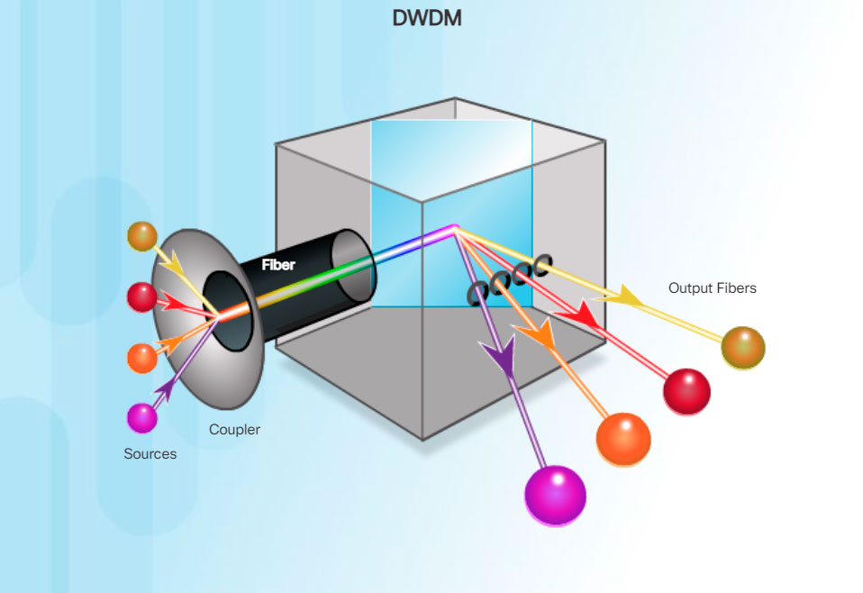
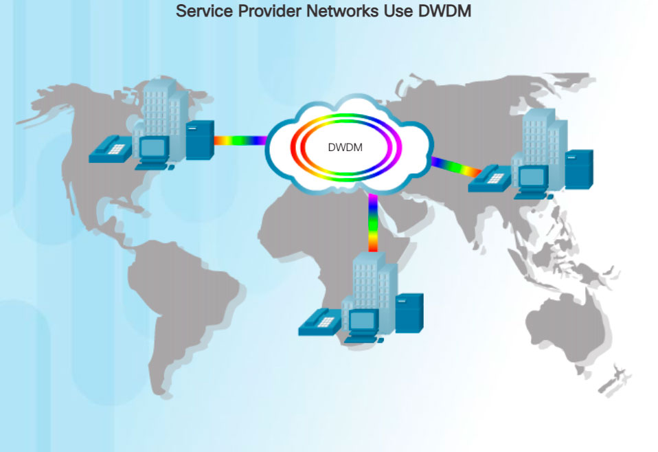

When a WAN service provider receives data from a client at a site, it must forward the data to the remote site for final delivery to the recipient. In some cases, the remote site may be connected to the same service provider as the originating site. In other cases, the remote site may be connected to a different ISP, and the originating ISP must pass the data to the connecting ISP.
Long-range communications are usually those connections between ISPs, or between branch offices in very large companies.
Service provider networks are complex. They consist mostly of high-bandwidth fiber-optic media, using either the Synchronous Optical Networking (SONET) or Synchronous Digital Hierarchy (SDH) standard. These standards define how to transfer multiple data, voice, and video traffic over optical fiber using lasers or light-emitting diodes (LEDs) over great distances.
Note: SONET is an American-based ANSI standard, while SDH is a European-based ETSI and ITU standard. Both are essentially the same and, therefore, often listed as SONET/SDH.
A newer fiber-optic media development for long-range communications is called dense wavelength division multiplexing (DWDM). DWDM multiplies the amount of bandwidth that a single strand of fiber can support, as shown in Figure 1.

There are several ways that DWDM enables long-range communication:
DWDM circuits are used in all modern submarine communications cable systems and other long-haul circuits, as shown in Figure 2.
